Econometrics I
TA Christian Alemán
Session 1: Friday 21, January 2022
Activity 1: Simulations
Simulate a Normal Distribution:
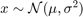
% Housekeeping clear all close all clc % Begin Script rng(1234) % Set seed for reproductivity % par.N = 500; % Number of observations var.x_vec = NaN(par.N,3); % Initialize random variable par.sigma = [0.1,1,2]; % Standard Deviation \sigma par.mu = [0,0,0]; % Mean \mu % This loop simulates the random variable for i = 1:3 var.x_vec(:,i) = par.mu(i) + par.sigma(i).*randn(par.N,1); end % Generate a density histogram par.num_bins = [100,50,10]; % Number of Bins opt.norm_type = {'count','pdf'}; % Normalization type opt.sel_norm = 2; % 1: count 2: pdf for j = 1:3 for i = 1:3 figure(j) subplot(3,1,i) histogram(var.x_vec(:,i),par.num_bins(j),'Normalization',opt.norm_type{opt.sel_norm}) ylabel([opt.norm_type{opt.sel_norm}]) title(['Bins $ = \,$',num2str(par.num_bins(j)),' $\mu=\,$',num2str(par.mu(i)),' $\sigma^{2}=\, $',num2str(par.sigma(i)^(2))],'interpreter','latex') end end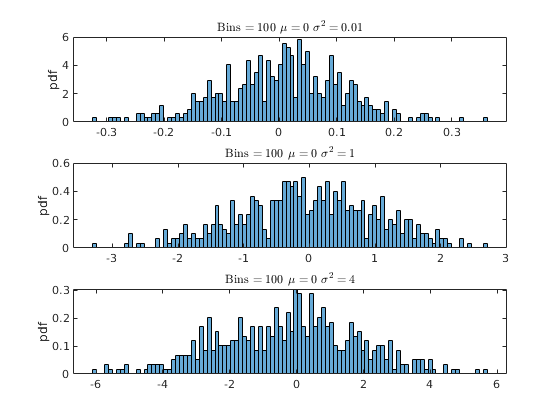 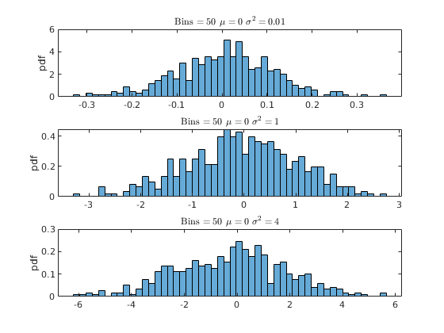 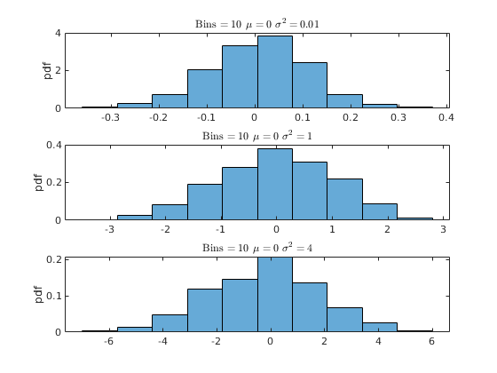
Activity 2: Kernel Density (Estimation)
Histogram:
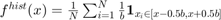
Where 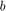 is the bin width
Kernel:
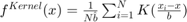
Where 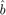 is the bin width
And 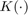 is the Kernel function. The most common types are:
- Normal
- Box
- Triangle
- Epanechnikov
Figure: Kernel Types

Figure: Kernel Illustration
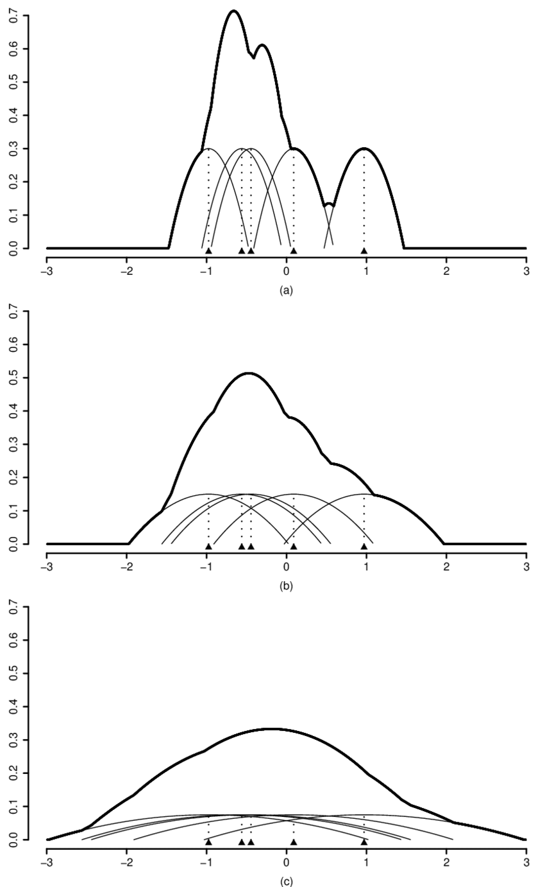
Practical Example
% Pick one simulation: par.N = 300; %5000; % Number of observations var.x_vec = par.mu(2) + par.sigma(2).*randn(par.N,1); % Simulate again % Kernel Parameters par.bw = [NaN,1.8,3]; % BandWidth opt.kfunc = {'normal', 'box','triangle','epanechnikov'}; % Kernel Functions var.kdensity = NaN(100,3); % Initialize Kernel Density par.support = NaN(100,3); % Initialize Kernel Support par.ahk_support = linspace(-4,4,100)'; % Ad Hock Support % Construct Kernel Density for i = 1:3 if i==1 [var.kdensity(:,i),par.support(:,i),dbw] = ksdensity(var.x_vec,'Kernel',opt.kfunc{1}); par.bw(i) = dbw; % Save default Bandwith else [var.kdensity(:,i),par.support(:,i),dbw] = ksdensity(var.x_vec,'Kernel',opt.kfunc{1},'Bandwidth',par.bw(i)); end end % Obtain theoretical PDF of the normal var.true_density = normpdf(par.ahk_support,par.mu(2),par.sigma(2)); figure(4) hold on histogram(var.x_vec,par.num_bins(2),'Normalization',opt.norm_type{opt.sel_norm}); p2 = plot(par.support(:,1),var.kdensity(:,1),'r-o','linewidth',1.2); p3 = plot(par.ahk_support,var.true_density,'b-x','linewidth',1.2); legend([p2 p3],{'Kernel Density','Underlying Density'}) ylabel(opt.norm_type{opt.sel_norm}) figure(5) hold on histogram(var.x_vec,par.num_bins(2),'Normalization',opt.norm_type{opt.sel_norm}); p2 = plot(par.support(:,1),var.kdensity(:,1),'r-','linewidth',1.2); p3 = plot(par.support(:,2),var.kdensity(:,2),'r--','linewidth',1.2); p4 = plot(par.support(:,3),var.kdensity(:,3),'r-.','linewidth',1.2); ylabel(opt.norm_type{opt.sel_norm}) legend([p2,p3,p4],{['Kernel BW = ',num2str(par.bw(1))],['Kernel BW = ',num2str(par.bw(2))],['Kernel BW = ',num2str(par.bw(3))]})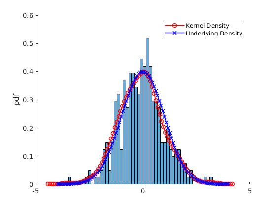 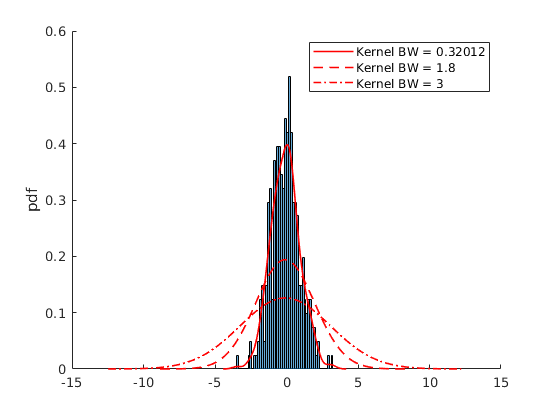
Activity 3: Spourious relations
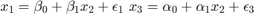
rng(4567) % Set seed for reproductivity % Generate x_{1},x_{2},x_{3} par.N = 100; par.x2_mu = 3; % % Mean par.x2_sigma = 1; % Standard Deviation par.eps_sigma1 = 0.1; % Standard Deviation Error 1 par.eps_sigma2 = 0.3; % Standard Deviation Error 2 par.beta_0 = 4; par.beta_1 = 0.3; par.alpha_0 = -1; par.alpha_1 = 2; var.x2_vec = par.x2_mu + par.x2_sigma.*randn(par.N,1); var.eps_1 = par.eps_sigma1.*randn(par.N,1); var.eps_2 = par.eps_sigma2.*randn(par.N,1); var.x1_vec = par.beta_0 + par.beta_1.*var.x2_vec+var.eps_1; var.x3_vec = par.alpha_0 + par.alpha_1.*var.x2_vec+var.eps_2; opt.v_names = {'rho(x_{1},x_{2})','rho(x_{3},x_{2})','rho(x_{1},x_{3})'}; c_table = array2table([corr(var.x1_vec,var.x2_vec),corr(var.x3_vec,var.x2_vec),corr(var.x1_vec,var.x3_vec)],'VariableNames',opt.v_names) figure(6) plot(var.x1_vec,var.x2_vec,'ko','MarkerFaceColor','k') xlabel('$x_{1}$','fontsize',17,'interpreter','latex') ylabel('$x_{2}$','fontsize',17,'interpreter','latex') figure(7) plot(var.x3_vec,var.x2_vec,'ko','MarkerFaceColor','k') xlabel('$x_{3}$','fontsize',17,'interpreter','latex') ylabel('$x_{2}$','fontsize',17,'interpreter','latex') figure(8) plot(var.x1_vec,var.x3_vec,'ko','MarkerFaceColor','k') xlabel('$x_{1}$','fontsize',17,'interpreter','latex') ylabel('$x_{3}$','fontsize',17,'interpreter','latex')
c_table =
1×3 table
rho(x_{1},x_{2}) rho(x_{3},x_{2}) rho(x_{1},x_{3})
________________ ________________ ________________
0.95992 0.99146 0.94858
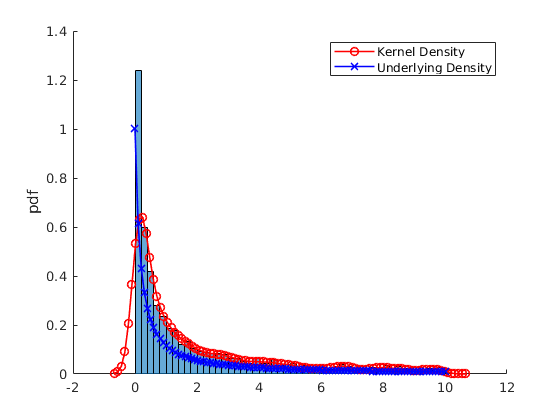 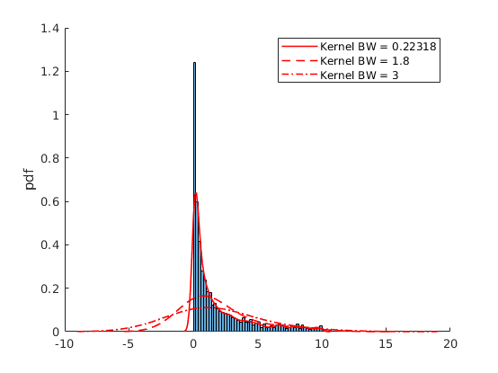 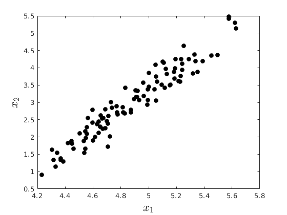